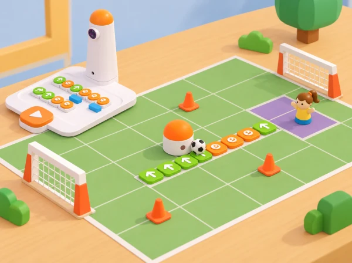

Un repte cooperatiu de futbol de taula
🏷️ Convivència i ciutadania
🌱 Situació, repte i intenció
🎯 Aprenentatges i vocabulari
- Llegir una graella i planificar una ruta de passada fins a una zona acordada.
- Programar, provar i depurar ordres de moviment mantenint una convenció comuna.
- Canviar rols i ajustar la dificultat perquè l’èxit depenga de la cooperació i no de la velocitat individual.
- Comparar una predicció amb el resultat i comunicar una millora del repte.
🧰 Materials i preparació
Dibuixeu una pista de taula amb caselles amples i dues zones de destinació. Useu una pilota lleugera que no bloquege sensors ni pose en risc el robot; si el kit no la pot empényer amb seguretat, feu que el robot la visite i que una persona la moga després.
🧰 Preparació, materials i llenguatge de programació
Si no es pot fixar amb seguretat, el robot acaba la ruta al costat de la pilota i una persona la col·loca en la porteria, registrant l’adaptació.
Useu un vocabulari compartit: inici, orientació, casella, ordre, obstacle, destinació i depuració. Per a girar, l’alumnat indica primer cap a on mira el robot i després el costat del gir. La seqüència es llig d’esquerra a dreta; cada avanç o retrocés correspon a un pas del robot. No confongueu “girar” amb “avançar una casella”.
📅 Seqüència didàctica
La proposta amplia el repte oficial de 45 minuts en una investigació de quatre sessions: primer s’aprén a llegir el camp i programar una ruta; després s’alternen els rols de defensa i atac; finalment, cada equip dissenya i comunica una variant pròpia. Si només disposeu d’una sessió, feu la sessió 1 i una ronda curta de la sessió 2.
Del mapa a la seqüència
Fase 1 · Activem i prediem
En una graella de 4 × 4 caselles de 10 cm, indiqueu inici, porteria i tres obstacles de cartó. Abans de programar, cada parella anticipa quins girs haurà de fer MatataBot.
Fase 2 · Explorem i construïm
L’adult pensa en veu alta com orientar MatataBot i traduir cada tram en ordres; l’alumnat compara avançar, retrocedir i girar 90°.
Fase 3 · Expliquem i registrem
Dibuixeu dues rutes possibles amb fletxes, escriviu el programa amb targetes de comanda i compteu ordres i caselles.
Fase 4 · Apliquem i millorem
Executeu una ruta, marqueu on queda el robot i localitzeu la primera diferència entre predicció i moviment. Corregiu només l’ordre necessària i torneu a provar.
Fase 5 · Comprovem i reflexionem
Expliqueu què heu canviat.
Defensa i atac amb rols intercanviables (45 min)
Fase 1 · Activem i prediem
Prepareu la mateixa graella i una pilota de paper lleugera amb porteria ampla. Un equip defensor situa tres obstacles sense tapar el robot ni crear passos massa estrets; l’equip atacant observa el camp i prediu una ruta possible.
Fase 2 · Explorem i construïm
L’equip atacant planifica una ruta fins a una casella des d’on una pala ampla de paper puga empényer la pilota suaument cap a la porteria. Dediqueu deu minuts a modelar la regla i preparar la primera ronda.
Fase 3 · Expliquem i registrem
Jugueu la primera ronda durant deu minuts i registreu si s’ha arribat a la zona de colp, si la pilota ha entrat, quantes ordres s’han usat i quin obstacle ha condicionat la ruta.
Fase 4 · Apliquem i millorem
Feu una pausa de cinc minuts per intercanviar rols i jugueu una segona ronda de deu minuts. Si la pala no es pot fixar sense bloquejar o danyar el robot, acabeu la ruta al costat de la pilota i que una persona la col·loque, registrant aquesta adaptació.
Fase 5 · Comprovem i reflexionem
Tanqueu amb cinc minuts de comparació. El punt és col·lectiu: atac i defensa guanyen quan poden justificar una decisió amb el mapa i les dades, no per rapidesa.
Dissenyar un repte equilibrat (45 min)
Fase 1 · Activem i prediem
Cada parella crea un mapa nou amb quatre obstacles i una condició clara per a l’equip contrari. Predigueu quines rutes poden ser vàlides abans d’intercanviar els mapes.
Fase 2 · Explorem i construïm
Una altra parella comprova si la porteria és accessible, si hi ha almenys una ruta vàlida i si totes les instruccions caben en el mapa. Si no hi ha solució, reduïu un obstacle o canvieu-ne la posició.
Fase 3 · Expliquem i registrem
Intercanvieu mapes, proveu la ruta amb el robot i compteu ordres. Anoteu la ruta provada, els girs i si s’ha arribat a la destinació.
Fase 4 · Apliquem i millorem
Reviseu els obstacles i ajusteu el mapa després de la prova. Com a extensió, demaneu dues rutes i compareu nombre d’ordres, girs i marge d’error; no declareu una ruta «òptima» si només n’heu provat dues.
Fase 5 · Comprovem i reflexionem
Expliqueu per què la solució és verificable amb el mapa i les ordres.
Galeria, explicació i transferència (45 min)
Fase 1 · Activem i prediem
Mostreu el mapa, la predicció, el programa i el registre de proves. Predigueu si una altra parella podrà executar la ruta sense que els autors l’expliquen.
Fase 2 · Explorem i construïm
Una parella visitant intenta repetir les ordres seguint només les fletxes i la convenció de gir acordada. L’equip autor observa sense donar instruccions addicionals.
Fase 3 · Expliquem i registrem
Recolliu una pregunta del grup visitant i una proposta concreta de millora. Anoteu en quin punt s’ha interpretat o executat de manera diferent.
Fase 4 · Apliquem i millorem
Decidiu si accepteu la proposta i comproveu-la amb una nova prova. Reviseu la llegenda o el programa perquè una altra parella puga reproduir-lo.
Fase 5 · Comprovem i reflexionem
Trieu una situació pròxima —repartir llibres en una biblioteca fictícia, arribar a una parada o portar una fitxa a un punt de recollida— i expliqueu quines parts del mètode es podrien reutilitzar.
🧪 Evidències i avaluació
Per cada intent, anoteu: equip i rol, mapa/versió, ruta prevista, ordres totals, caselles recorregudes, obstacles evitats, arribada a la zona de colp, resultat de la pilota i canvi fet després de la prova. Valoreu quatre aspectes amb una escala descriptiva —encara amb ajuda / quasi autònom / autònom i explicat—: orientació espacial, correspondència entre fletxes i ordres, depuració a partir del primer punt de desviació i cooperació amb rols rotatius.
L’èxit no depén de marcar gol: una ruta que identifica l’error i es corregeix amb evidència també és una solució satisfactòria.
♿ Participació, accessibilitat i seguretat
Oferiu instruccions en fletxes grans, pictogrames o paraules; es pot anticipar la seqüència amb una fitxa que recórrega la quadrícula abans de programar. Les persones poden triar entre planificar, col·locar obstacles, programar, observar, registrar o narrar, amb rotació voluntària dels rols. Reduïu el nombre d’obstacles, amplieu la porteria, lleveu el límit d’ordres i jugueu sense cronòmetre quan ajude a comprendre el repte.
Manteniu el camp sobre una taula estable, useu només una pilota de paper, deixeu les mans fora del recorregut mentre el robot es mou i atureu-lo abans de reposicionar obstacles.
🔗 Referents i adaptació
Adapta Soccer Match, activitat oficial de Coding Set per a 5–7 anys: el pla proposa una introducció guiada de 10 minuts, 30 minuts de joc en què defensa col·loca obstacles i atac programa una ruta amb ordres d’avanç/retrocés/gir, i 5 minuts de reflexió i extensió.
La proposta pròpia conserva la planificació de rutes, els obstacles, els rols alterns i la prova del robot, però amplia la pràctica en quatre sessions, crea mapes i criteris locals i substitueix el rànquing per evidències de cooperació i depuració. No reutilitza el mapa ni les imatges oficials.